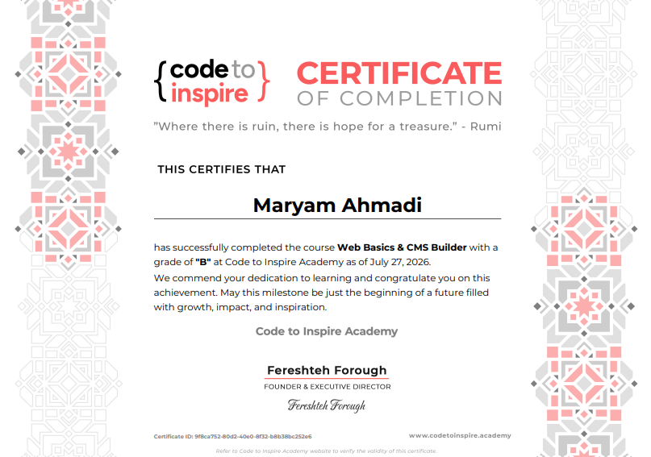
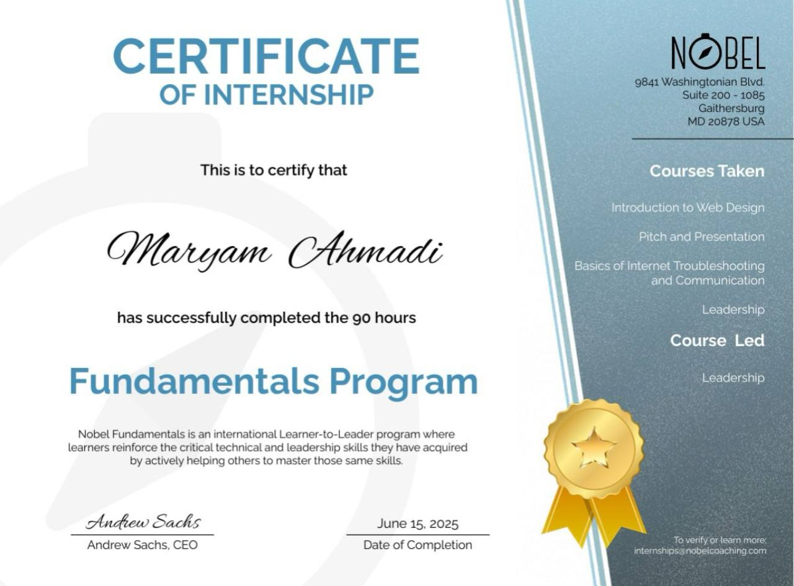
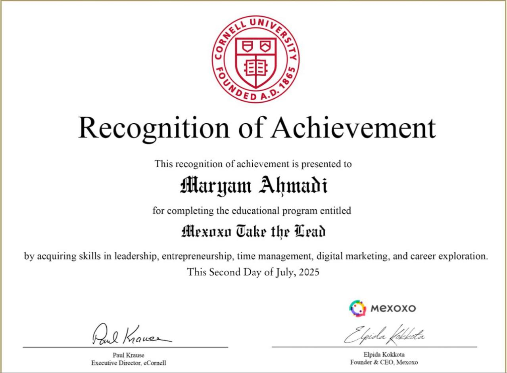
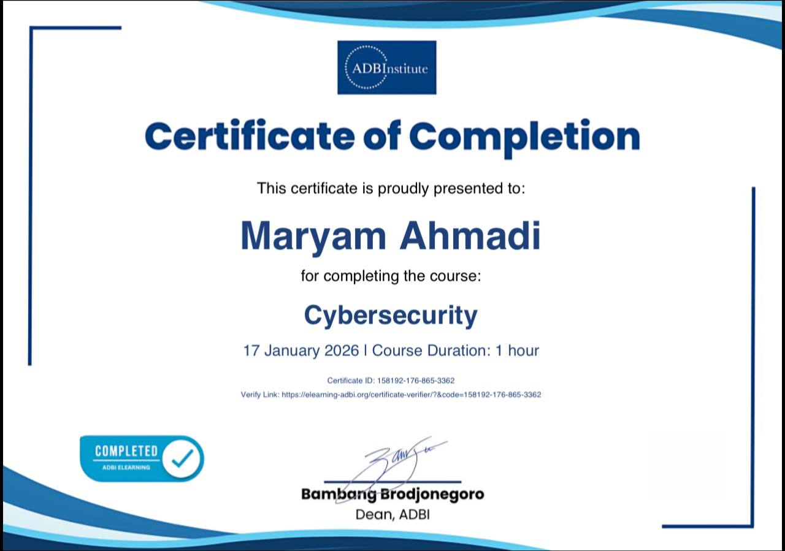
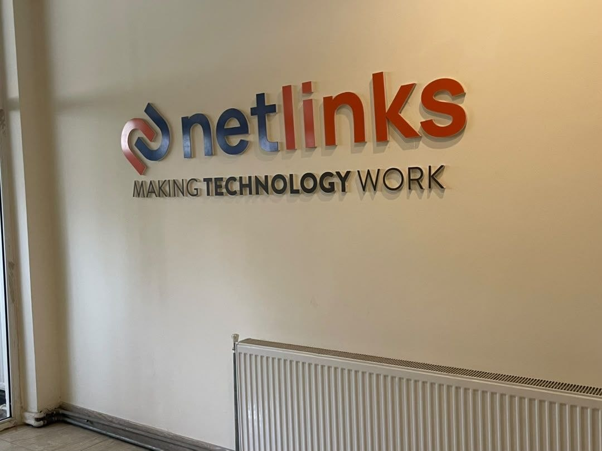
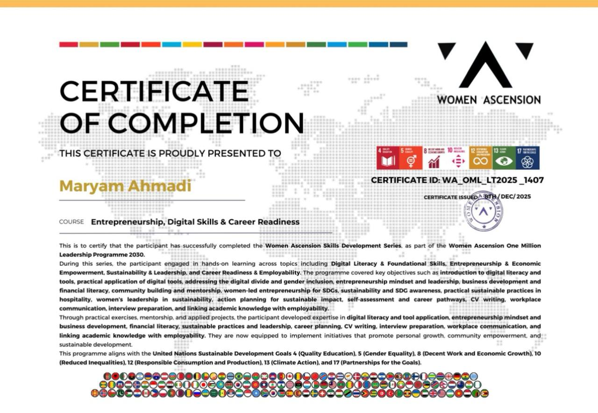

Online High School
Secondary Education · Completed
Completed my secondary education through an online school program.
My learning journey combines formal education, technical training, leadership programs, and continuous self-learning.
Secondary Education · Completed
Completed my secondary education through an online school program.
Web Basics & CMS Builder · 6–7 Month Program · Grade B
Completed technical training focused on web design, website development, and CMS-related skills.
Leadership & Global Promotion
Completed a long-term learning program focused on leadership, promotion, communication, teamwork, and professional development.
Women Take the Lead
Completed self-paced learning focused on leadership, entrepreneurship, career development, time management, and digital marketing.
Cybersecurity Training
Completed additional learning focused on cybersecurity and digital skills.
Front-End Development Program · 2026 – Present
Currently developing practical skills in HTML, CSS, JavaScript, Bootstrap, responsive web design, WordPress, Git, GitHub, and real-world web projects.
Participated in learning sessions covering digital marketing, online communication, digital presence, and promotion.
Participated in additional learning activities focused on entrepreneurship, career development, communication, and professional skills.
Continuously developing technical and creative skills through independent study, practice, and hands-on projects.
Turning training and self-learning into practical projects to strengthen real-world development skills.

Web Basics & CMS Builder · Grade B

Leadership & Global Promotion

Women Take the Lead

Cybersecurity Training

Front-End Development Program · 2026 – Presentand continuing

Entrepreneurship & Professional Development · Completed
I'm continuing to grow through technology, practical projects, and new opportunities.